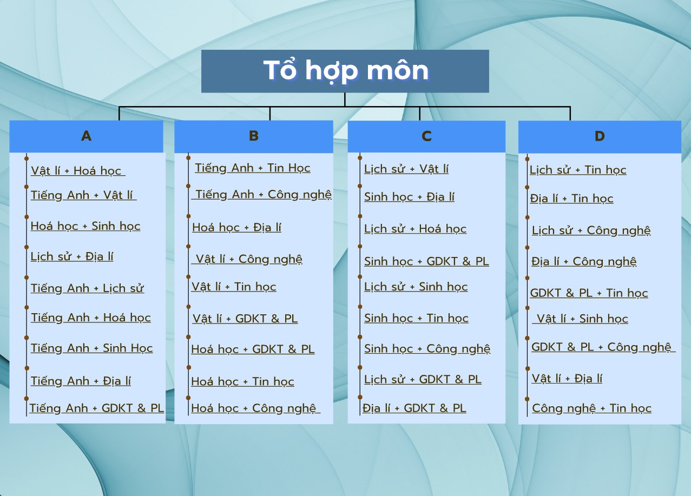

Trang chủ

Trường đại học giảm chỉ tiêu điểm thi tốt nghiệp THPT, tăng xét tuyển riêng
Tech
Những điểm mới trong tuyển sinh đại học năm 2025
Cars
Học sinh chủ động nắm bắt những điều chỉnh mới
Tech
Liên thông đào tạo giữa các cấp học, tạo thuận lợi cho người học nâng cao trình độ
Tech
Nhiều trường đại học xét tuyển bổ sung đến hết tháng 9
Tech